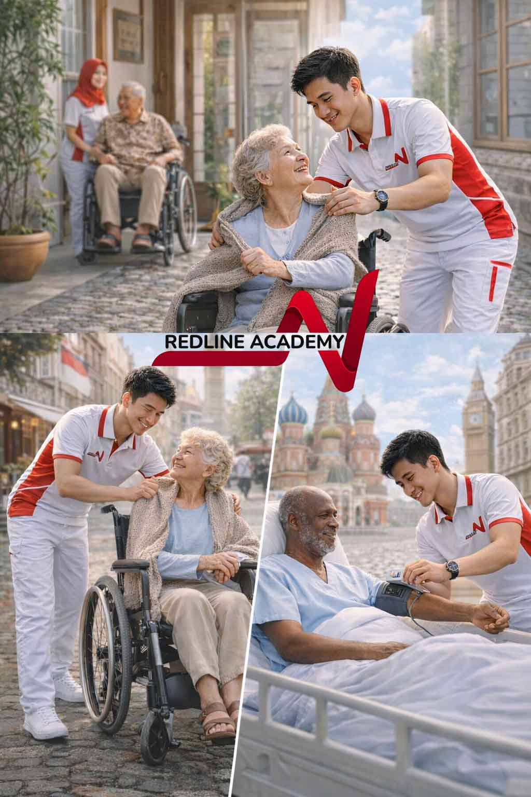
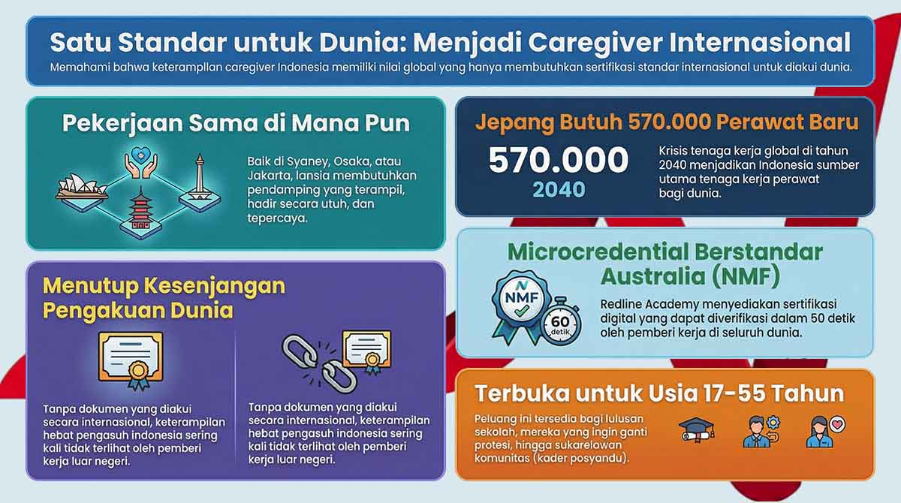

Perawatan tanpa batas: Seorang Caregiver Mengerjakan Pekerjaan yang Sama di Mana Pun
Yang berubah lintas negara bukan inti pekerjaan care, melainkan bagaimana kompetensinya didokumentasikan, diakui, dan dinilai.
Primary keyword: standar credential caregiver | Search intent: Wawasan industri | Cluster stage: Kesenjangan pengakuan


Pekerjaan care bersifat universal
Memandikan seseorang dengan martabat, membantu mobilitas dengan aman, memantau kondisi, menyiapkan makanan, mendokumentasikan perubahan, dan hadir secara emosional adalah inti pekerjaan caregiver di mana pun. Sydney, Osaka, maupun Jakarta menuntut esensi skill yang sama: kehadiran, kompetensi, dan kepercayaan.
Yang berbeda adalah pengakuannya
Masalah terbesar bukan kurangnya kapasitas care Indonesia, melainkan kurangnya sistem pengakuan yang membuat keterampilan itu terbaca di pasar global. Inilah recognition gap yang ingin ditutup Redline.
Seorang caregiver bisa sangat terampil dalam praktik, tetapi tetap tidak terlihat nilainya jika kompetensinya tidak terdokumentasi dalam format yang dipahami employer lintas negara.
Mengapa dunia membutuhkan caregiver Indonesia?
Jepang, Australia, dan banyak negara dengan populasi menua sedang menghadapi kekurangan tenaga care. Indonesia justru memiliki basis budaya gotong royong dan kebiasaan merawat yang kuat.
Masalahnya bukan pasokan manusia, melainkan bagaimana keahlian itu diberi kerangka profesional yang bisa diverifikasi.
Indonesia tidak kekurangan tenaga care. Dunia yang kekurangan cara membaca dan mengakui nilainya.
Di situlah credential standard berubah dari dokumen administratif menjadi jembatan keadilan profesional.
Apa yang membuat credential menjadi pembeda?
- Learning outcomes harus jelas dan benar-benar dinilai.
- Volume belajar dan praktik harus terdokumentasi.
- Harus ada quality assurance yang bisa diverifikasi.
- Kompetensi harus cukup spesifik untuk dipahami employer internasional.
Tiga domain care yang saling terhubung
Redline melihat aged care, disability support, dan mental health support bukan sebagai dunia terpisah, tetapi sebagai tiga ekspresi dari keterampilan care yang sama. Masa depan workforce akan semakin lintas-domain, fleksibel, dan berbasis portofolio kompetensi.
Arsitektur microcredential Redline
Untuk menutup recognition gap, Redline membangun tiga tier: foundation, specialist, dan Japan-track bundle. Tujuannya sederhana: membuat kompetensi caregiver Indonesia legible, portable, dan bisa dipercaya lintas sistem.
Dengan digital credential yang dapat diverifikasi cepat, nilai seorang pekerja tidak lagi berhenti di tempat ia belajar, tetapi bisa ikut bergerak ke tempat ia dibutuhkan.
Keyword cluster dan internal linking
Artikel ini berada di cluster credential caregiver internasional dan mengarah ke halaman pilar yang menjelaskan jalur belajar, kualitas credential, dan kesiapan pendaftaran.
FAQ singkat
Mengapa standar credential lebih penting daripada sekadar sertifikat biasa?
Karena employer global tidak hanya melihat bukti selesai belajar, tetapi juga bagaimana kompetensi itu diukur, didokumentasikan, dan diverifikasi.
Apakah recognition gap bisa menghambat caregiver yang sebenarnya sudah kompeten?
Ya. Banyak caregiver terampil tetap sulit terlihat nilainya jika kompetensinya tidak dikemas dalam format yang terbaca oleh sistem dan employer internasional.
Halaman mana yang sebaiknya dibaca setelah artikel ini?
Lanjutkan ke Kursus Caregiver Bersertifikat untuk memahami kualitas credential, lalu ke Daftar Menjadi Caregiver Profesional saat Anda siap memilih langkah berikutnya.
Care work is universal
Bathing someone with dignity, assisting mobility safely, monitoring health, preparing meals, documenting changes, and showing emotional presence are the core responsibilities of a caregiver everywhere. Whether in Sydney, Osaka, or Jakarta, the essence of the work remains the same: presence, competence, and trustworthiness.
Recognition is what changes
The biggest problem is not the lack of Indonesian care capacity, but the lack of recognition systems that make that skill legible to the global market. This is the recognition gap Redline is trying to close.
A caregiver may be highly competent in practice and still remain invisible if that competence is not documented in a format global employers can understand.
Why does the world need Indonesian caregivers?
Japan, Australia, and many aging societies are facing severe care shortages. Indonesia, by contrast, carries a strong culture of mutual care and lived caregiving instincts.
The challenge is not supply. The challenge is how those skills are framed, documented, and verified professionally.
Indonesia does not lack care workers. The world lacks a way to read and recognize their value.
This is where credential standards shift from administration into professional justice.
What makes a credential the differentiator?
- Learning outcomes must be clear and assessed.
- The volume of learning and practice must be documented.
- There must be a recognizable quality assurance signal.
- The competence must be specific enough to be useful for international employers.
Three connected care domains
Redline sees aged care, disability support, and mental health support not as isolated professions, but as three expressions of the same care capability. The future workforce will become increasingly cross-trained, flexible, and portfolio-based.
The Redline microcredential architecture
To close the recognition gap, Redline builds three tiers: foundation, specialist, and a Japan-track bundle. The objective is simple: make Indonesian caregiver competence legible, portable, and trusted across systems.
With digital credentials that can be verified quickly, a worker's value no longer stops where they trained. It can travel to where it is needed.
Keyword cluster and internal linking
This article sits inside the international caregiver credentials cluster and points readers to pillar pages about training pathways, credential quality, and enrolment readiness.
Quick FAQ
Why do credential standards matter more than a generic certificate?
Because global employers need more than proof of completion. They look for assessed outcomes, documented practice, and a credential format they can verify.
Can the recognition gap block already capable caregivers?
Yes. Many skilled caregivers remain undervalued when their competence is not packaged in a format international systems and employers can interpret.
What should readers open after this article?
Continue to Certified Caregiver Course for credential quality, then to How to Apply as a Professional Caregiver when you are ready for the next step.
Siap Mulai Karier Caregiver?
Hubungi tim Redline Academy untuk konsultasi program dan jalur belajar yang sesuai kebutuhan Anda.
Konsultasi Sekarang